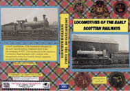
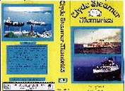

| film |
| home page |
| Webb Memorial Library or by mail from MPI Home Video, 16101 South 108th Avenue, Orlando Park IL. . The Writer Speaks Video History Series In 1994 the Foundation commenced a program of video interviews with important film and television writers. More than 25 writers have been interviewed in the program. Epstein (writer or co-writer of Casablanca, The Man Who Came to Dinner, Mr. |
|  |
|  | An international traveling museum exhibit chronicling the history of mankind's first interactive media. . Brookhaven 1958 Video Game - The first video game may have been developed at the Department of Energy's Brookhaven National Laboratory in 1958. William Higinbotham designed Tennis for Two for a laboratory visitors day. Classic Videogame Station Odyssey - Japanese videogame history including cartoons. |